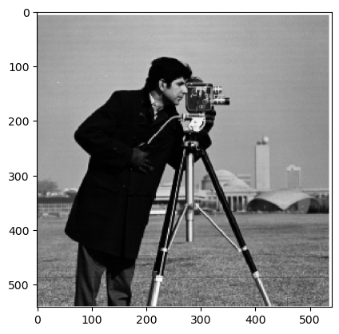

Project 2
Filtering and frequencies using gaussian and laplacian filters for finding features in images
Part 1: Fun with Filters
Part 1.1: Finite Difference Operator
Here is the first image of the project which is a cameraman.

I took the derivate of the image in both the x and y
direction by using the convolve2d method from the scipy
library with a derivate in each direction:
D_x = [[1, -1]]
D_y = [[1], [-1]]
I then calculated the gradient by taking computing the
convolution over the image with the x and y derivatives and
then taking the square root of the sum of the squares of the
two derivatives:
Gradient Magnitude = sqrt((convolve_x^2 + convolve_y^2))
I then set a binary threshold of 0.2 to only show pixels values that were higher than 0.2. This made the edges in the image more visible:
Part 1.2: Derivative of Gaussian (DoG) Filter
To make the filters less noisy, I now applied a gaussian filter to the image. I now got a blurred image by creating a gaussian kernel and convolving it with the image.
When we now compute the gradient of the image and binarize as before, we can see that the edges are much clearer and that we get far less noise compared to before.

To do the same with a single convolution, I created a 2d gaussian by taking the outer product between two 1d gaussians. Then I convolved D_x and D_y with the 2d gaussian to get blurred derivatives. When we then calculate the gradient with the blurred derivates, we can see that we get the same result as before without needing to blend before.
Part 2: Fun with Frequencies!
Part 2.1: Image "Sharpening"
Next, I implemented a sharpening filter by subtracting the blurred image from the original image and adding the result to the original image. Adding more of the higher frequencies makes the edges more visible which gives the illusion of the image being sharper.
To make this procedure even more streamlined I rewrote the
code to calculate the unsharp filter mask by using the
formula:
f*((1+a)e -ag)
Here f represents the input image, a is a scaling factor
that controls the sharpness intensity, e is the unit
impulse, and g represents the gaussian.
Before
After
Before
After
After
After
I then blurred an image of cobblestone and sharpened it again to be able to see how the sharpening affects the image.
Original
Blurred
Original
Blurred and resharpened
As we can see, the image is much clearer after we unsharpen it. However, it does not look the same as the original image. The original image is more detailed. While the unsharpened image detects edges, it is not able to revover the details that were present in the original image. When we unsharpen the image, we are therefore not able to reproduce the original image but we rather get an sharp image but with less detail.
Part 2.2: Hybrid Images
In this part I created a hybrid image by combining a low-pass filtered image with a high-pass filtered image. The low-pass filtered image was created by convolving the image with a gaussian filter and the high-pass filtered image was created by subtracting the low-pass filtered image from the original image just as before.
Additionally, I implemented a cutoff frequency to be able to control the amount of high and low frequencies in the image. This was done by setting the amount of cycles the kernel would go through per image in the gaussian filtering as described in the paper. In this way, we could set a low cutoff frequency to remove most of the high frequencies to get a blurry image or a high cutoff frequency to keep most of the high frequencies and get a sharper image. The opposite goes for the high-pass filter.
Below are the results of the hybrid images I created. The first image of Derek and Nutmeg looks like Derek up close but like Nutmeg from a distance. The second image of the elephant and tiger looks like an elephant up close but like a tiger from a distance. And the third image of the orange and the bald man looks like an orange up close but like a bald man from a far.
However, the last image of the happy and angry man failed where the man always looks angry. This is most likely because the cutoff frequencies were set in a bad which goes to show how important the cutoff frequencies are to get a satisfactory result. Additionally, it may be that the features in the images that make the man look angry are always a little visible which dominates the facial expression making the man look angry even though you see more of the happy face.

Derek

Nutmeg

Hybrid
Tiger

Elephant

Hybrid

Orange
Bald man

Hybrid
Happy man
Angry man

Hybrid
Even though I'm quite happy with the bald man and the orange, I still think Derek and the cat is the hybrid image that looks the best so I'll show the frequency plots for those.
First off, after taking the Fourier transform, we have the frequency plot for the images before the high-pass and low-pass filtering. We can see that the cat has a lot of diagonal lines which explains the fact that the image is tilted. Derek on the other hand only has the horizontal and vertical which can be explained by the fact that the image doesn't have that many patterns except for the straight lines of the background and the face.
Nutmeg
Derek
After filtering the images, we can see that Nutmeg has stayed mostly the same. However, Derek has now gotten a lot of horizontal and vertical lines spread across the Fourier space. This is because the high-pass filter has removed most of the low frequencies in the image.

Nutmeg

Derek
The hybrid image is a combination of the high-pass and low-pass filtered images. We can see that the image is a combination of the horizontal and vertical lines from Derek and the diagonal lines from Nutmeg. This is because the high-pass filter has removed the diagonal lines from Derek and the low-pass filter has removed the horizontal and vertical lines from Nutmeg.

Hybrid
Part 2.3: Gaussian and Laplacian Stacks
To create a gaussian stack, I convolved the input image with a gaussian with a kernel width of 40 pixels and a sigma of 5. I then added the result to the stack. I repeated the process on the resulting image. I did this 5 times to get a stack of 5 gaussian blurred images.
For the laplacian stack, I subtracted the gaussian blurred image from the next gaussian blurred image in the stack to get the high frequencies in the images.
I created a mask with 0's on the left side and 1's on the right side. I then created a gaussian stack for the mask and multiplied the mask with the laplacian stack on each level get a blended image on each level.
Due to normalization errors, the colors of the images are off. The gaussian blur also blurs the edges of the mask which makes the stages look weird.

Here is two images of space that I blended together in the same way.
Space 1
Space 2
Blended
Part 2.4: Multiresolution Blending (a.k.a. the oraple!)
For the multiresolution blending, I started by scaling the
images to the same size. I then created a gaussian stack for
the mask and used the formula
blended image = mask * image1 + (1 - mask) * image2
to blend the two images together on each of the layers in
the laplacian stacks. In the end, I summed the layers in the
laplacian stack to get the final blended image. This gave me
this result.
For the irregular mask, I used the PolygonSelector library to manually create a mask around the objects in the images I wanted to blend. This worked by showing the image and letting the user click points that were going to make up the mask. To finish the mask, you could select the first point again. The mask was then created by filling the polygon with 1's and the rest with 0's. To get a smooth transition between the mask and the rest of the image, I aslo gaussian blurred the mask. I got a much better result when using the GaussianBlur function from the cv2 library in this task so I used that instead of the gaussian blend I created in a previous task.
For the Peter Parker and Spiderman image, I noticed that choosing a mask that both would fit the face of Peter Parker and the face of Spiderman was difficult. I therefore chose to make it possible to select points for the mask in both images. The masks are then added together to get the final mask and the procedure from there is the same as before.
The result of the blending can be seen below.
Spiderman
Peter Parker
Proving Peter Parker is Spiderman
Me working

Elon Musk

Us working together
The Teletubbies sun
Me as a baby
Me as the Teletubbies sun